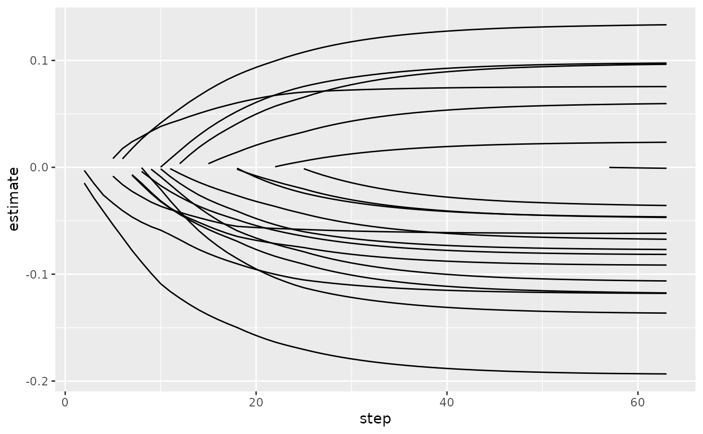

Glance accepts a model object and returns a tibble::tibble()
with exactly one row of model summaries. The summaries are typically
goodness of fit measures, p-values for hypothesis tests on residuals,
or model convergence information.
Glance never returns information from the original call to the modeling function. This includes the name of the modeling function or any arguments passed to the modeling function.
Glance does not calculate summary measures. Rather, it farms out these
computations to appropriate methods and gathers the results together.
Sometimes a goodness of fit measure will be undefined. In these cases
the measure will be reported as NA.
Glance returns the same number of columns regardless of whether the
model matrix is rank-deficient or not. If so, entries in columns
that no longer have a well-defined value are filled in with an NA
of the appropriate type.
# S3 method for glmnet glance(x, ...)
| x | A |
|---|---|
| ... | Additional arguments. Not used. Needed to match generic
signature only. Cautionary note: Misspelled arguments will be
absorbed in |
Other glmnet tidiers:
glance.cv.glmnet(),
tidy.cv.glmnet(),
tidy.glmnet()
A tibble::tibble() with exactly one row and columns:
Number of observations used.
Total passes over the data across all lambda values.
Null deviance.
library(glmnet) set.seed(2014) x <- matrix(rnorm(100 * 20), 100, 20) y <- rnorm(100) fit1 <- glmnet(x, y) tidy(fit1)#> # A tibble: 1,086 x 5 #> term step estimate lambda dev.ratio #> <chr> <dbl> <dbl> <dbl> <dbl> #> 1 (Intercept) 1 -0.207 0.152 0 #> 2 (Intercept) 2 -0.208 0.139 0.00464 #> 3 (Intercept) 3 -0.209 0.127 0.0111 #> 4 (Intercept) 4 -0.210 0.115 0.0165 #> 5 (Intercept) 5 -0.210 0.105 0.0240 #> 6 (Intercept) 6 -0.210 0.0957 0.0321 #> 7 (Intercept) 7 -0.210 0.0872 0.0412 #> 8 (Intercept) 8 -0.210 0.0795 0.0497 #> 9 (Intercept) 9 -0.209 0.0724 0.0593 #> 10 (Intercept) 10 -0.208 0.0660 0.0682 #> # … with 1,076 more rows#> # A tibble: 1 x 3 #> nulldev npasses nobs #> <dbl> <int> <int> #> 1 104. 255 100library(dplyr) library(ggplot2) tidied <- tidy(fit1) %>% filter(term != "(Intercept)") ggplot(tidied, aes(step, estimate, group = term)) + geom_line()# works for other types of regressions as well, such as logistic g2 <- sample(1:2, 100, replace = TRUE) fit2 <- glmnet(x, g2, family = "binomial") tidy(fit2)#> # A tibble: 947 x 5 #> term step estimate lambda dev.ratio #> <chr> <dbl> <dbl> <dbl> <dbl> #> 1 (Intercept) 1 0.282 0.0906 -1.46e-15 #> 2 (Intercept) 2 0.281 0.0826 6.28e- 3 #> 3 (Intercept) 3 0.279 0.0753 1.55e- 2 #> 4 (Intercept) 4 0.277 0.0686 2.48e- 2 #> 5 (Intercept) 5 0.284 0.0625 4.17e- 2 #> 6 (Intercept) 6 0.293 0.0569 5.79e- 2 #> 7 (Intercept) 7 0.303 0.0519 7.39e- 2 #> 8 (Intercept) 8 0.314 0.0473 8.94e- 2 #> 9 (Intercept) 9 0.325 0.0431 1.03e- 1 #> 10 (Intercept) 10 0.336 0.0392 1.14e- 1 #> # … with 937 more rows